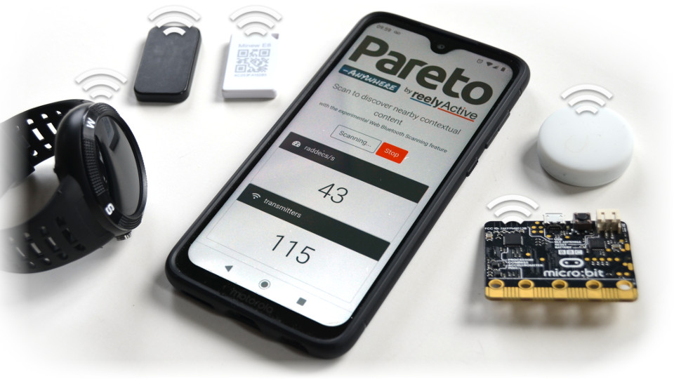

Enable Web Bluetooth Scanning
Our step-by-step guide to enable this experimental feature in your web browser, if supported.
The TL;DR (Too Long; Didn't Read)
Learn how to enable Web Bluetooth Scanning in your browser.
- What's this?
- Web Bluetooth Scanning is an experimental feature initially supported by the Chrome browser as of November 2019.
- What does it do?
- This feature allows your device to detect and respond to relevant Bluetooth devices in proximity, simply via a web page.
- What uses this?
- Any web page could take advantage of this. Our open source Pareto Anywhere web app demonstrates the potential.
Chrome Browser
On Android and Desktop
Enable Web Bluetooth Scanning in two steps:
- browse to chrome://flags/#enable-experimental-web-platform-features
- select Enabled
Note: requires Chrome version 79 or higher. Verify by browsing to chrome://version

Other Browsers
Unfortunately, few browsers are supported at the time of writing
Chrome/Chromium is the only browser successfully tested to date (March 2020). See the Scanning API implementation status for updates.
What's next?
With Web Bluetooth Scanning Enabled...
Experiment with it!
The Pareto Anywhere web app demonstrates the potential of a web page to respond to devices in proximity
Try the web appDevelop with it!
Pareto Anywhere is open source software which anyone is free to use for their own applications
Browse the source